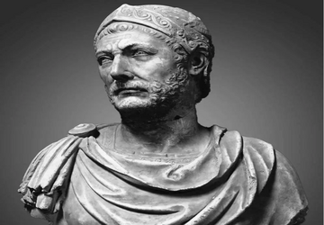
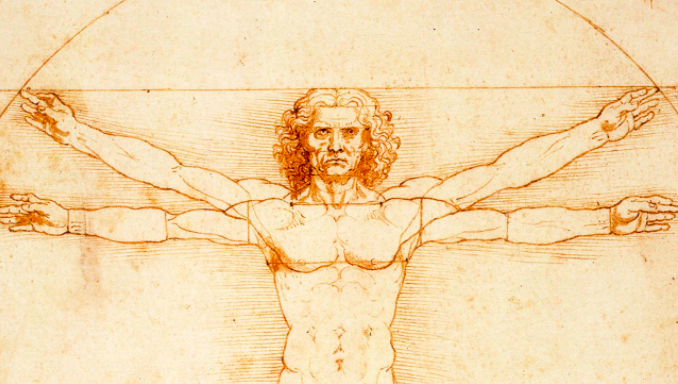
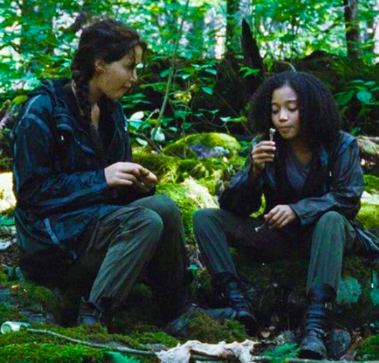
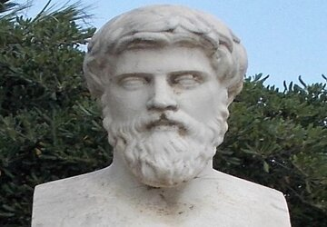
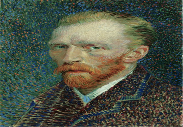
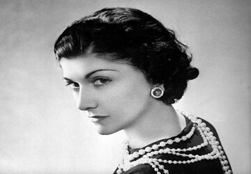
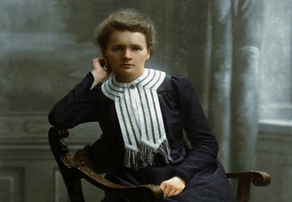

{kind=link}

Hannibal, General of Carthage
"I shall either find a way or make one."
I know I was put on Earth to make a very big impact. That's what drives me.
I see things uniquely and do things with my own style.

I care about other people, especially the poor and the least served in society.

When I read books or watch movies, I often write down interesting quotes that I find thought-provoking. Here are some of my favorites.

"I shall either find a way or make one."

"What we achieve inwardly will change outer reality."

"And the great isn't something accidental; it must be willed."
"Let everything happen to you: beauty and terror. Just keep going. No feeling is final."

"In order to be irreplaceable one must always be different."
"Enduring means accepting. Accepting things as they are and not as you wish them to be, and then looking ahead, not behind."

"First principle: never let one's self be beaten down by persons or by events."
- My Goal In Life Is To: Make a difference in the world and do big things that have high value for other people.
- My Work: STScI/NASA, University of Pennsylvania, Deloitte, etc.
- My Education: Virginia Tech, University of Maryland
- My Volunteering: RESET Computer Science Instructor, Data Science Philadelphia Organizer, Data Engineers D.C. Organizer
My Purpose Statement: "My work/education is what I've achieved, but it's not who I am. I've realized as I've gotten older that the following fact is indeed so true: what truly brings a person lasting joy is doing things that have a positive impact on other people. In life, joy is never really derived from superficial or material things. If an individual looks back on his or her life, it's so evident that life is all about the journey and not the destination. 1) It's about looking out for the least served in society. 2) It's about using your talents and resources to help others. 3) It's about staying present and happy with what you have right now, not making comparisons with other peoples' bank accounts, possessions, talents, and achievements. 4) It's about turning failure into strength, knowing that failure leads to growth. 5) It's about being your own unique self and not being afraid to be your whole self. 6) It's about always standing on the side of the truth and first principles. 7) It's about standing up to evil and injustice in the world. I pray that I never lose this perspective. No matter what happens in my life, I will never lose hope because I trust the True Vine. I'll always fight hard and always keep grinding." - Y
{kind=link}
{kind=link}
{kind=link}
{kind=link}
{kind=link}
{kind=link}